Plots Generated from the Simulated Dataset (PROBC)
OlinkViz Authors
2026-11-17
Source:vignettes/plots_using_simulated_data.Rmd
plots_using_simulated_data.RmdAbout this document
This vignette demonstrates longitudinal and cross-sectional Olink NPX
visualizations generated directly from the bundled simulated dataset probc (26
subjects, 2 treatment groups "Group1" and
"Group2", 9 visits 1..85,
184 assays across 2 Olink Target 96
panels).
library(OlinkViz)
library(ggplot2)
library(data.table)
PROBC <- as.data.frame(probc)
PROBC$Group <- factor(PROBC$Project)
PROBC$Timepoint_f <- factor(PROBC$Timepoint)
base <- PROBC[PROBC$Timepoint == 1, ]
early_late <- PROBC[PROBC$Timepoint %in% c(1, 29, 85), ]Bundled Datasets in OlinkViz
OlinkViz bundles 12 datasets across 6 cohorts:
-
Long COVID (
iris_longcovid,bansal_baseline57,bansal_longitudinal,bansal_univariate): IRIS longitudinal cohort (180 proteins, 7 visits) and Bansal et al. baseline (57 samples), paired longitudinal (34 samples), and pre-computed Wilcoxon results (182 proteins). -
Myasthenia Gravis (
beatmg_npx,beatmg_demo,beatmg_npx_merged): BeatMG trial NPX (~2,000 samples, 738 proteins), clinical demographics (52 variables), and merged table. -
Primary CNS Lymphoma (
pcnsl_olink): Wide-format CSF/plasma NPX matrix (172 samples, 1,007 proteins). -
Tuberculosis (
qinfeng_npx): Song 2025 wide-format NPX dataset (66 samples, 92 proteins). -
Down Syndrome (
tofa_data,tofa_dictionary): TOFA longitudinal NPX table (453,684 rows) and variable dictionary. -
Simulated Cohort (
probc): Used throughout this vignette (26subjects,2groups"Group1"/"Group2",9visits1..85,184assays across2Olink Target 96 panels).
Preview of probc (DT::datatable)
if (requireNamespace("DT", quietly = TRUE)) {
DT::datatable(
head(PROBC, 50),
rownames = FALSE,
options = list(pageLength = 5, scrollX = TRUE)
)
}1. Sample & Assay Quality Control
p_qc <- plot_qc(PROBC, color_by = "PlateID", sd_cutoff = 2.5)
p_lod <- plot_lod(PROBC, threshold = 75)
if (requireNamespace("patchwork", quietly = TRUE)) {
olinkviz_combine(p_qc, p_lod, journal = "nature") &
theme(
legend.position = "bottom",
legend.box = "horizontal",
legend.box.just = "center",
legend.margin = margin(0, 0, 0, 0),
legend.spacing.x = unit(0.2, "cm"),
legend.text = element_text(size = 8),
legend.title = element_text(size = 8.5),
strip.text = element_text(size = 8)
)
} else {
p_qc
}
plot_plate_qc(PROBC)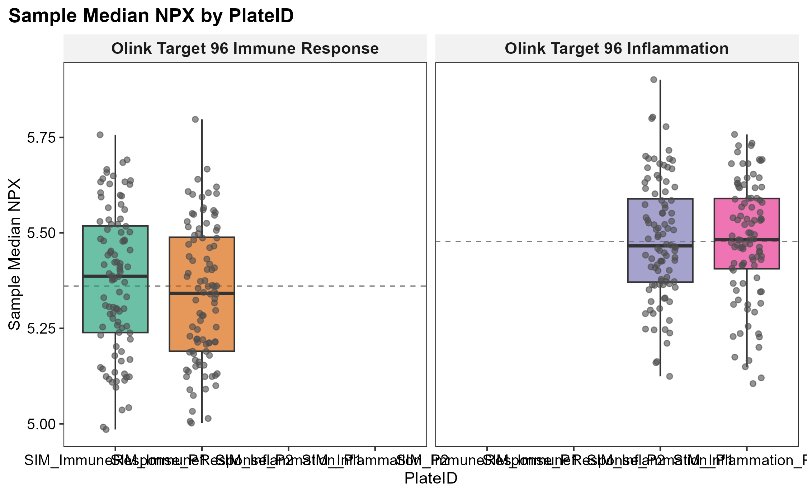
2. Ordination & Clustered Expression
plot_dim_reduc(base, type = c("pca", "umap"), color = "Project",
perplexity = 7, seed = 42)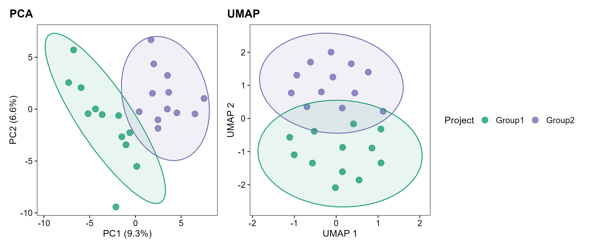
ps <- plot_scree(base, n_pcs = 10, title = "PROBC Baseline Variance Explained")
pl <- plot_loadings(base, components = 1:2, top_n = 8)
if (requireNamespace("patchwork", quietly = TRUE)) {
olinkviz_combine(ps, pl, journal = "nature")
} else {
pl
}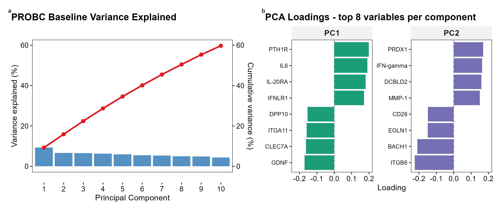
oe_base <- oe_from_long(base)
plot_heatmap(oe_base, scale = "row", show_rownames = FALSE,
annotation_rows = "Panel",
main = "PROBC Baseline Expression Heatmap")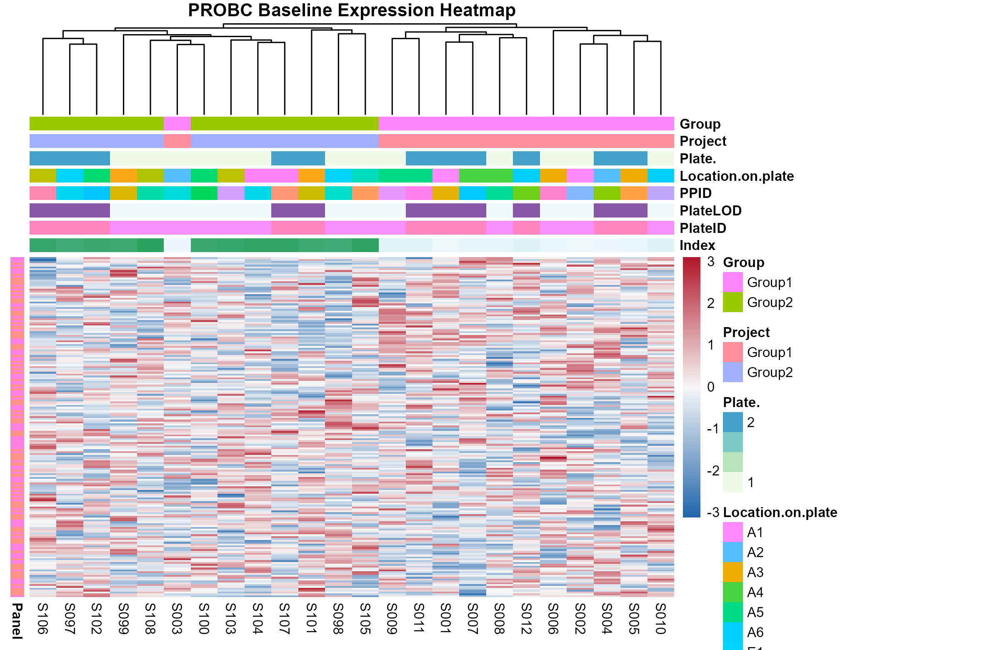
3. Single-Protein Longitudinal Profiles
3.1 Mean ± 95% CI Profile Over Time
(plot_mean_profile())
plot_mean_profile(PROBC, assay = c("IL6", "IL4", "CXCL12", "TNF"),
x = "Timepoint", group = "Project", show_lod = TRUE)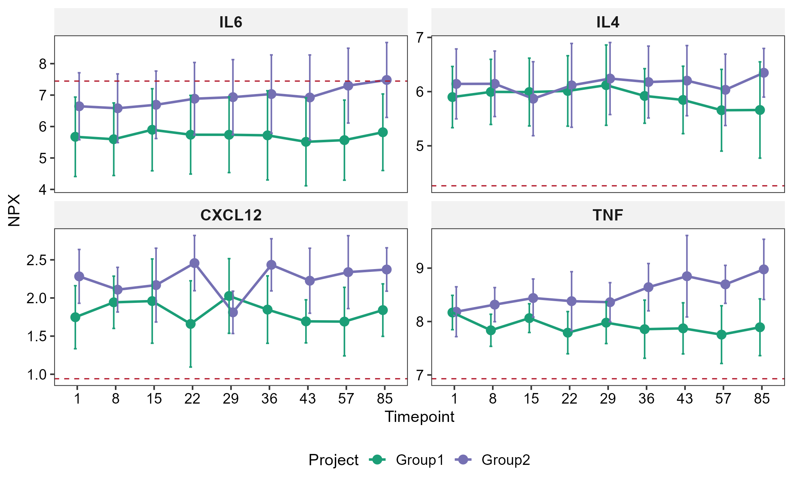
3.2 Individual Subject Trajectories
(plot_trajectory())
plot_trajectory(PROBC, assay = "IL6", subject_id = "PPID",
time = "Time", group = "Project",
smooth_method = "loess", lod_col = "MaxLOD",
title = "IL6 Individual Trajectories")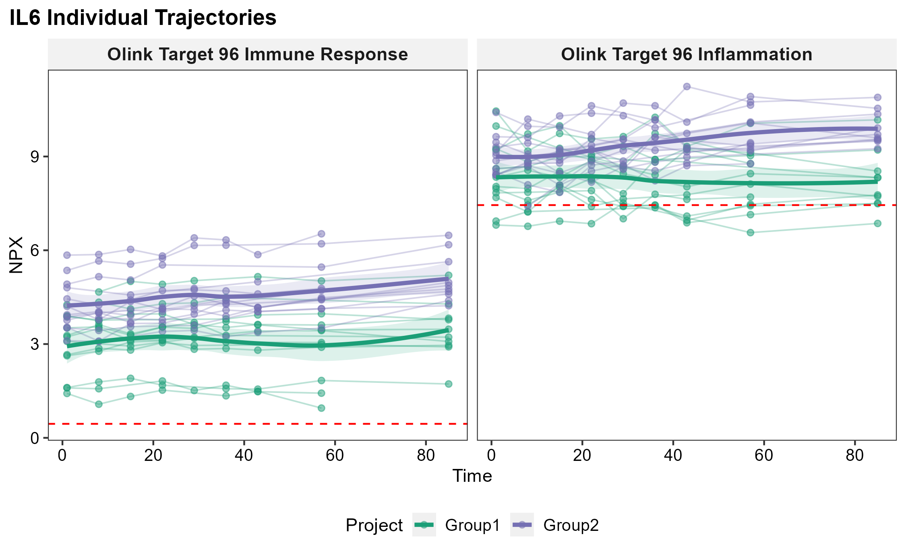
3.3 Spaghetti Plot Faceted by Group
(plot_spaghetti())
plot_spaghetti(PROBC, assay = "IL4", subject_id = "PPID",
time = "Time", facet_by = "Project")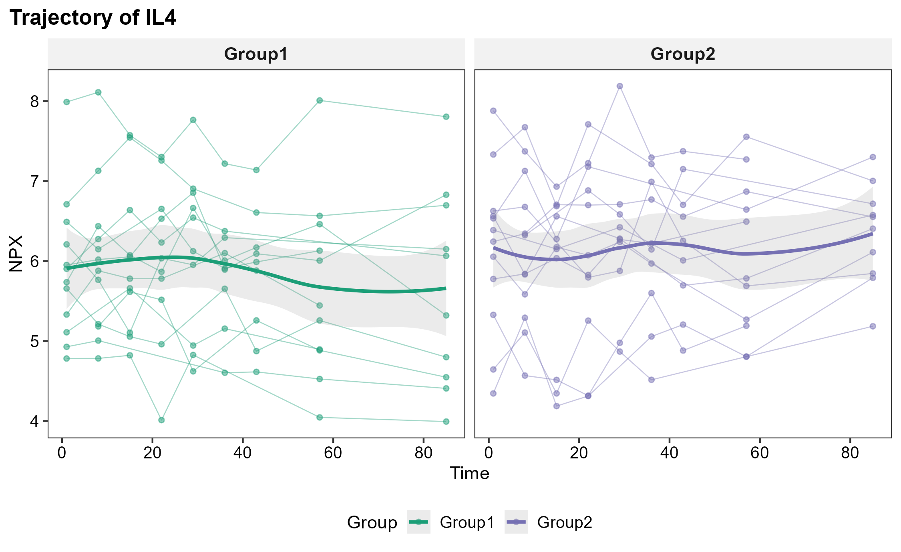
3.4 Violin + Boxplot Across Timepoints
(plot_violin())
plot_violin(early_late, assay = "IL6", x = "Timepoint_f",
group = "Project", show_lod = TRUE,
test = "t.test", show_p_value = TRUE, show_overall = TRUE)
3.5 Group Boxplots at Baseline (plot_boxplot())
plot_boxplot(base, assay = c("IL6", "TNF", "IL4", "CCL11"),
group = "Project", show_lod = TRUE, show_significant = TRUE)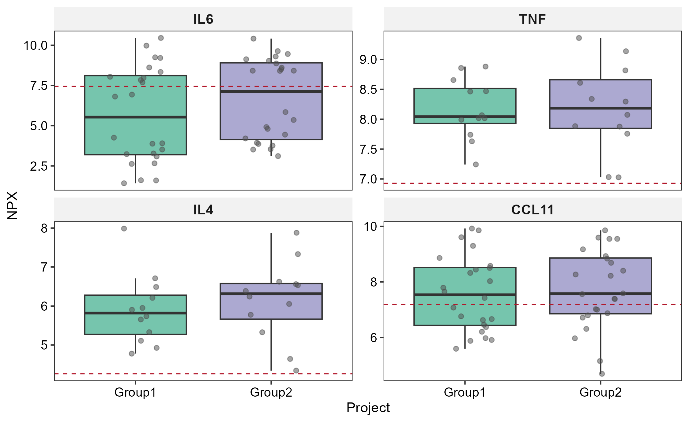
3.6 Linear Mixed-Model Point-Range (plot_lmer())
plot_lmer(early_late, assay = c("IL6", "TNF"),
x = "Timepoint_f", group = "Project", random = "PPID",
add_pvalue = requireNamespace("lmerTest", quietly = TRUE))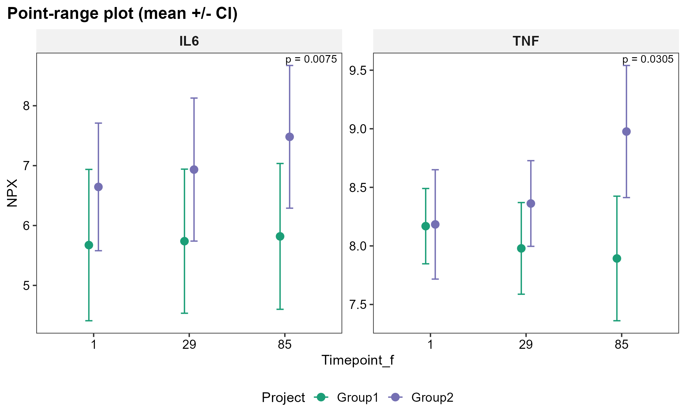
3.7 Continuous Regression Smooth
(plot_regression())
plot_regression(PROBC, assay = "IL6", x = "Time",
color_by = "Project", title = "IL6 Linear Trend Over Time")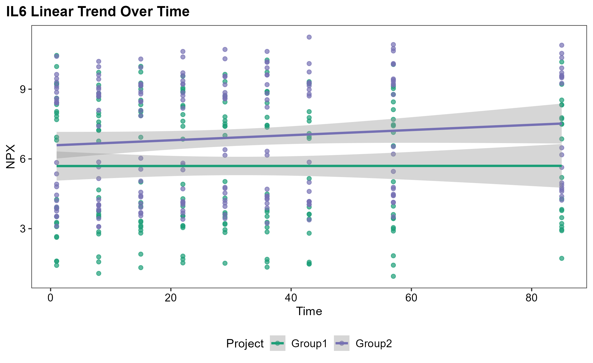
4. Multi-Protein Differential Expression & ROC Analysis
dt_base <- as.data.table(base)
de_probc <- dt_base[, {
g1 <- NPX[Project == "Group1"]
g2 <- NPX[Project == "Group2"]
tt <- tryCatch(stats::t.test(g2, g1), error = function(e) NULL)
list(
MeanNPX = mean(NPX, na.rm = TRUE),
estimate = mean(g2, na.rm = TRUE) - mean(g1, na.rm = TRUE),
conf.low = if (is.null(tt)) NA_real_ else tt$conf.int[1],
conf.high = if (is.null(tt)) NA_real_ else tt$conf.int[2],
p.value = if (is.null(tt)) NA_real_ else tt$p.value
)
}, by = .(Assay, Panel)]
de_probc[, Adjusted_pval := stats::p.adjust(p.value, method = "BH")]
de_probc <- de_probc[order(p.value)]
top_hits <- head(de_probc$Assay, 4)
pv <- plot_volcano(de_probc, pval_col = "p.value", fc_col = "estimate",
fc_threshold = 0.3, max_labels = 8,
title = "Baseline Volcano (Group2 vs Group1)")
pm <- plot_ma(de_probc, mean_col = "MeanNPX", fc_col = "estimate",
pval_col = "p.value", fc_threshold = 0.3, max_labels = 8,
title = "Baseline MA Plot")
if (requireNamespace("patchwork", quietly = TRUE)) {
olinkviz_combine(pv, pm, journal = "nature")
} else {
pv
}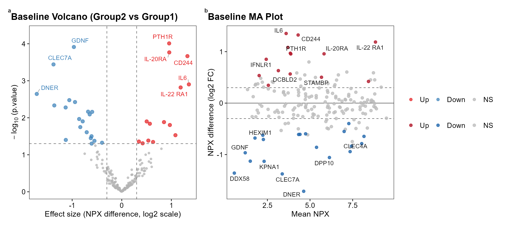
pd <- plot_dotplot(base, group = "Project", assays = head(de_probc$Assay, 12),
title = "Top 12 Baseline Assays")
de_f <- head(de_probc, 12)
de_f[, sig := p.value < 0.05]
pf <- plot_forest(de_f, assay_col = "Assay", estimate_col = "estimate",
lower_col = "conf.low", upper_col = "conf.high",
sig_col = "sig", title = "Top 12 Effect Sizes (95% CI)")
if (requireNamespace("patchwork", quietly = TRUE)) {
olinkviz_combine(pd, pf, journal = "nature")
} else {
pf
}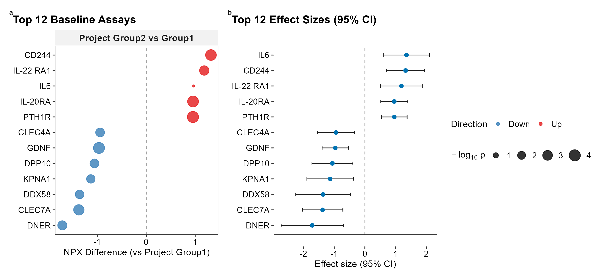
4.1 Correlation Matrix (plot_corr_triangle())
plot_corr_triangle(base, method = "spearman", top_n = 15,
title = "PROBC Baseline Correlation Triangle")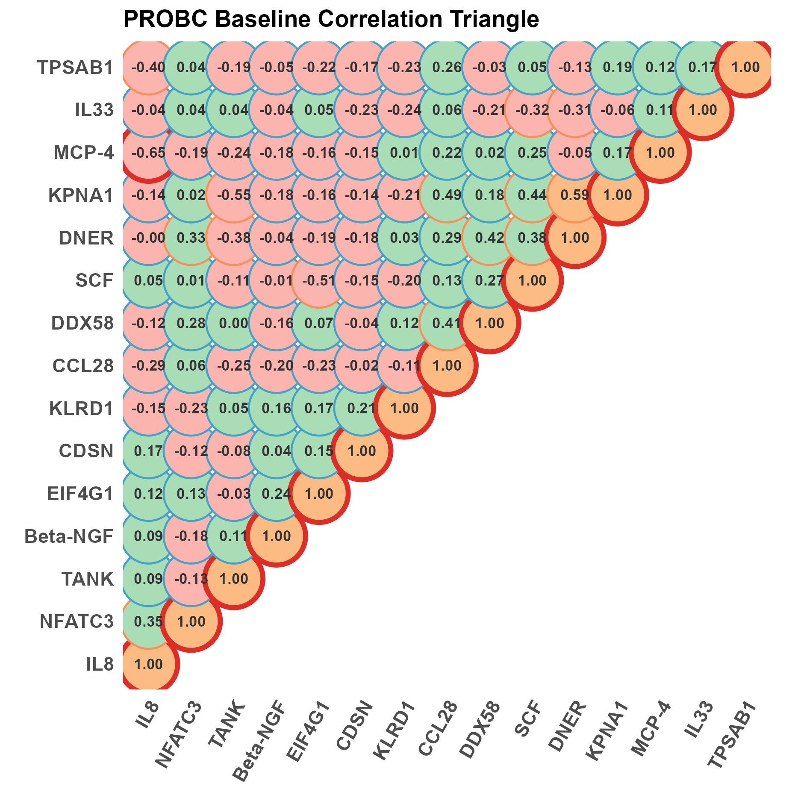
4.2 ROC Curves with 95% CI Shade & Paired DeLong Test
(plot_roc())
plot_roc(base, assays = top_hits[1:3], group = "Project",
add_ci = TRUE, boot_n = 100, show_direction = TRUE,
compare = TRUE, compare_method = "delong",
palette = "okabe_ito",
title = "PROBC Top Baseline Markers (95% CI & DeLong Test)")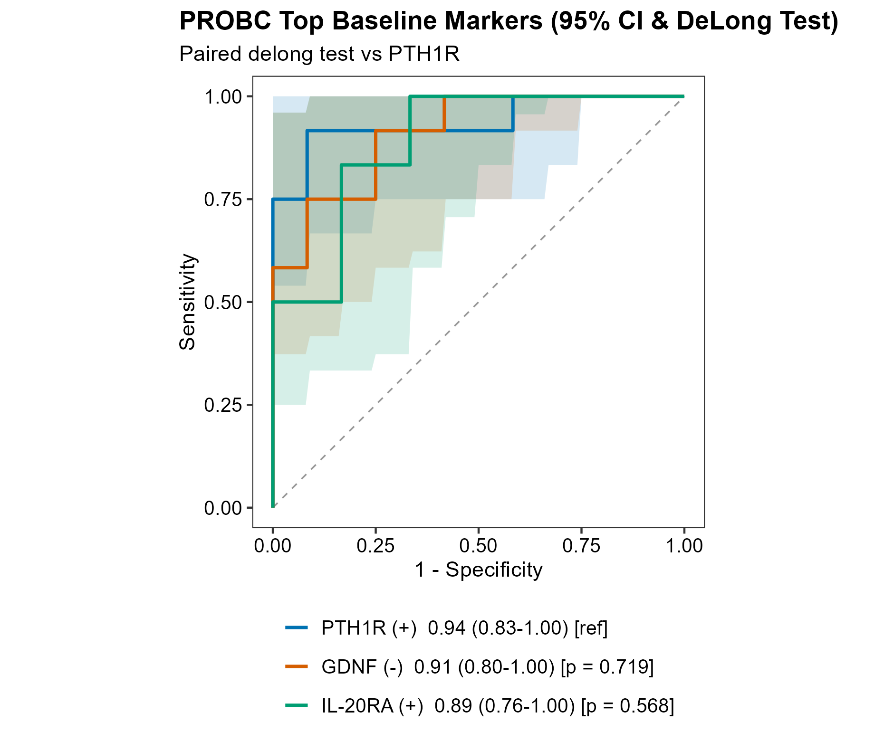